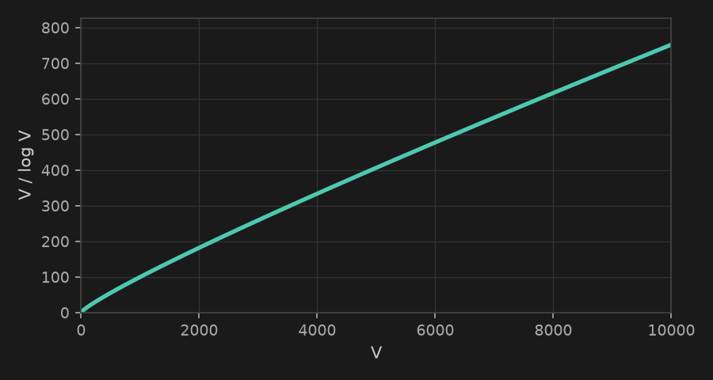

Занятие 33
В прошлый раз разобрали жадную идею Дейкстры,
поняли, зачем нужна куча, и написали класс Heap с push и
pop.
Вернёмся к графу с прошлого занятия и пройдём Дейкстру заново - но теперь минимум будем брать из кучи, а не перебором.
O(log V) вместо
O(V)
куча
В куче только (0, A)
куча
A обработана. У неё три
соседа - в кучу легли (4, B), (2, C) и (9,
D) (прямое ребро A-D)
куча
Минимум в куче - (2, C).
Релаксация C-D: 2 + 3 = 5 меньше старых 9 -
кладём новую запись (5, D), старая (9, D) остаётся в куче
куча
Достаём (4, B). Путь через
B-D: 4 + 6 = 10 - это больше текущих 5,
не обновляем
куча
Достаём (5, D), обрабатываем.
В куче осталась старая запись (9, D)
куча
Достаём (9, D) - но
D уже обработана, пропускаем эту запись. Куча пуста - алгоритм
завершён
Одна и та же вершина может попасть в кучу несколько раз - с разными расстояниями, если её путь улучшился позже.
visited[u]continueНаш класс Heap сравнивал числа. Но
в Дейкстре в кучу кладём пары: (dist, vertex).
dist, и только если они равны - vertex
(3, 'B') меньше (5, 'A') - сравнили только
dist(5, 'A') меньше (5, 'B') - dist
равны, сравнили vertexСравнение по vertex сработает, только
если все вершины одного типа и их можно сравнивать между собой.
0, 1, 2, ... - сравниваются как числа,
всё работает'A', 'B' - сравнивались бы
как строки, тоже сработало быdist Python упал бы с TypeError0..n-1, так что мы в
безопасности - но в общем случае об этом нужно помнить
Свой класс Heap мы написали, чтобы
понять, как куча устроена внутри. В боевом коде это делать не нужно - в
Python уже есть готовый модуль.
import heapq - min-heap прямо поверх обычного списка
heapq.heappush(heap, item) вместо нашего
pushheapq.heappop(heap) вместо нашего pop
Сам алгоритм не поменялся: та же идея "взять минимум, релаксировать соседей". Поменялась только структура хранения кандидатов - а с ней и то, сколько раз выполняется цикл.
VV раз (по разу на вершину)V ячеекV шагов по O(V) =
O(V²)O(E) - значит
и pop'ов O(V+E)O(log V)O(V+E) шагов по O(log V) =
O((V+E) log V)V), но каждый дорогой (O(V)).
В куче записей больше (V+E, из-за дублей), зато каждая
дешёвая (O(log V))
В полном графе ребер - n*(n-1)/2, в дереве - n-1. На примере ниже 12 вершин и 20 ребер (1.7n)
Возьмём типичный разреженный граф, где рёбер
примерно в 2 раза больше вершин: E ≈ 2V.
O(V²)O((V + E) log V), подставляем
E = 2V: O((V + 2V) log V) = O(V log V) - множитель
3 в O-нотации не пишут, он не влияет на порядок ростаV² / (V log V) = V / log
VЧислитель растёт
линейно, знаменатель - только логарифмически. Значит с ростом
V разрыв увеличивается без предела, даже если не
знать точные константы.
График y = V / log V на линейной
шкале для V от 0 до 10 000.

Сравним сами величины V² и
V log V - без точных констант, только порядок роста.
| V | V² | V log V |
| 100 | 10 000 | ~700 |
| 1 000 | 1 000 000 | ~10 000 |
| 10 000 | 100 000 000 | ~130 000 |
| 100 000 | 10 000 000 000 | ~1 700 000 |
V=100 000 V² уже физически не считается за
разумное время, а V log V - легко
B с dist=5 и
закроет её навсегда
A->C->B = 8 + (-6) = 2 -
короче!
B уже обработана, пересмотра не будет| алгоритм | веса | сложность |
| BFS | все рёбра равны | O(V + E) |
| 0-1 BFS | только 0 и 1 |
O(V + E) |
| Дейкстра | любые неотрицательные | O((V+E) log V) |
Алгоритм находит только длину кратчайшего пути. Чтобы восстановить сам путь, при каждой удачной релаксации нужно запоминать, из какой вершины пришли.
Путь восстанавливаем от конечной
вершины: смотрим её parent, потом parent этого parent,
и так до source, а затем разворачиваем получившийся список.
задачи на кратчайшие пути
В задачах ЕГЭ граф часто дают не картинкой, а таблицей соединений или списком дорог с расстояниями.
| A | B | C | D | |
| A | - | 4 | - | 7 |
| B | 4 | - | 2 | - |
| C | - | 2 | - | 3 |
| D | 7 | - | 3 | - |
По таблице с прошлого слайда найти длину кратчайшего пути из
города A в город D.
dist[] и запускаем Дейкстру из A
dist[D]По той же таблице найти длину кратчайшего пути из города
A в город C.
dist[C]Реальное задание 23 ЕГЭ (№92565): граф до 200 рёбер, описание - в текстовом файле. В уме такое уже не прогонишь.
L M W - ребро из L в
M весом W1
в вершину 100В городе несколько пожарных станций сразу. Для каждого дома нужно найти время, за которое доедет ближайшая из них.
Наивная идея: запустить Дейкстру отдельно из каждой станции, а потом взять минимум по всем запускам для каждого дома.
K, это K полных запусков Дейкстры - дорого,
особенно если станций много
Хочется получить ответ за один проход Дейкстры, как будто все станции - это уже одна общая точка старта.
dist = 0 - они уже "источник"5 домов A, B, C, D, E, станции - в A
и E. Дороги: A-B=3, B-C=4, C-D=2,
D-E=3, B-D=6.
Найти для каждого дома время до ближайшей станции.
(0, A) и (0, E)
dist[] и visited[] - как обычно, по
одному на весь граф, а не по одному на каждую станциюA=0, B=3, C=5, D=3, E=0
Частый олимпиадный вариант: найти кратчайший (или дешевейший) путь, но не более K промежуточных остановок.
Обычная Дейкстра про число пересадок ничего
не знает - она видит только dist и vertex.
(dist, vertex)visited[vertex] - одна запись на вершину(dist, vertex, stops)visited[vertex][stops] - на пару(0, src, 0) - расстояние,
вершина, пересадок пока 0dist
(vertex, stops) уже
нашли путь не хуже - пропустить записьstops == K - дальше идти нельзя,
соседей не трогаем(dist + w,
neighbor, stops + 1)vertex ==
dst и даёт минимальную ценуn городов, пронумерованных от 0 до
n - 1, соединены рейсами с ценой. Дан список рейсов [from, to,
price].
Дан город вылета src, город прилёта dst и
число K - максимум пересадок.
Найди самую дешёвую цену перелёта из src в
dst не более чем с K пересадками. Если такого маршрута нет -
верни -1.